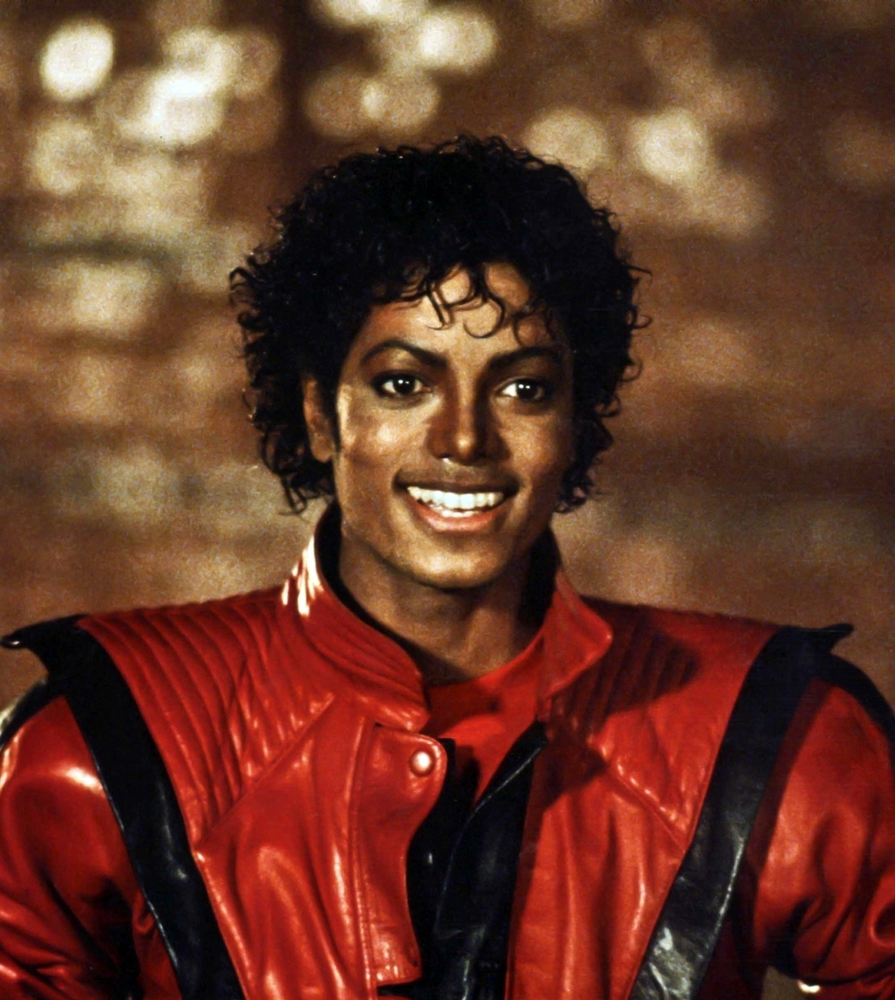
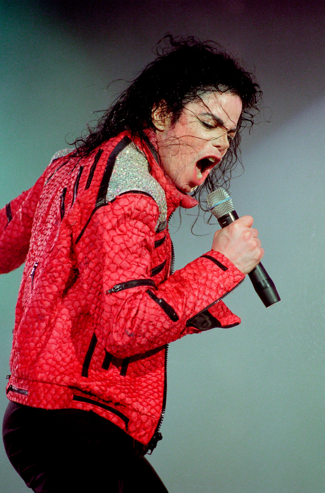

Michael Joseph Jackson (Gary, Indiana, 29 de agosto de 1958-Los Ángeles, 25 de junio de 2009)fue un cantante, compositor, productor y bailarín estadounidense.Apodado como el "Rey del Pop",sus contribuciones y reconocimiento en la historia de la música y el baile durante más de cuatro décadas, así como su publicitada vida personal, lo convirtieron en una figura internacional en la cultura popular. Su música incluye una amplia acepción de géneros como el pop, rhythm and blues (soul y funk), rock, disco y dance, y es reconocido como el «artista musical más exitoso de todos los tiempos» por los Guinness World Records.
Comenzó su carrera artística a mediados de los años 1960 en la agrupación musical The Jackson 5, en la cual publicó, junto con algunos de sus hermanos, diez álbumes hasta 1975. En 1971, inició su carrera como solista, aunque siguió perteneciendo al grupo. A principios de la década de 1980, Jackson se convirtió en una figura dominante en la música popular.
Sus vídeos musicales, entre los que se destacan «Beat It», «Billie Jean» y «Thriller», de su álbum de 1982 Thriller, son acreditados como una ruptura de las barreras raciales y la transformación del medio en una forma de arte y herramienta promocional. La popularidad de estos ayudó a llevar a la cadena televisiva MTV a la fama.